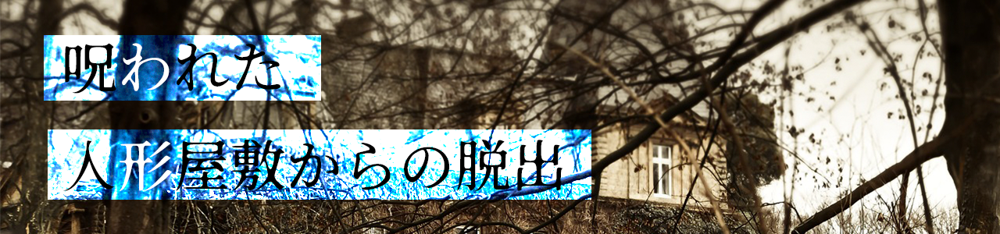

STAGE：1使用人からのナゾ
友人によると、この屋敷に迷い込んだのは一人ではないらしい。
登山家、蒐集家、お嬢様と執事。そして屋敷の使用人が一緒だそうだ。
「おやおや皆さん。外は嵐で大変だったでしょう？ようこそ、この屋敷へ」
「すっかり体が冷えてしまったでしょう。
暖まりながら、暇つぶしにこんなナゾはいかがですか？」
「そうそう、困ったときにはヒントがあります。できるだけすぐみないように頑張って下さいね」
STAGE：2人形の背中
どうやら、謎を解くことで
人形の背中が開けられる仕組みのようだ。
「この人形が持っていたメモが鍵じゃないかな…！！早速解いてみよう！」
「あ、もし答えに辿り着けなさそうだったら私もこっちで考えてみるね！！ヒントになるかも！！」
STAGE：3正しい順番の人形
物置の中に入ると目立つ位置に人形たちが座っていた。
人形の足元には一枚の写真が残されている。
どうやら今座っている人形とは順番が違っているようだが…
彼らが写真を見てヒントをくれるので正しい順番を友人に教えよう！

「情報が断片的で混乱しそうだね…わかったら答えは漢字四文字で教えて欲しいな！！」
STAGE：4箱の鍵の解除番号は？
箱には鍵がかかっており、4桁の数字を入力しなくてはいけない。
蓋部分に貼られた紙に書いてある謎が鍵になっているようだ。
「うーん…これは発想力が大事な謎ですわね…なかなか閃かないときは見方を変えてみるのがいいかもしれませんわ」
STAGE：5この扉の先には？
廊下の一番奥の扉にはこんなことが書かれていた。
『この扉を開けるには、この部屋の主人の誕生日が必要だ』
「誕生日...?」